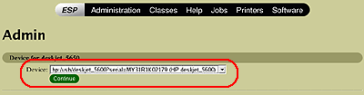

Installation - Step 4 - CUPS - USB/Parallel
- Connect your HP printer to your computer using USB or Parallel.
Note: See your printer documentation for specific instructions on connecting the USB, Parallel or Network cable to your printer and computer.
- Open a console/terminal window.
- Enter this command to login as super user; (Ubuntu users go to step 5)
Warning: The root password gives you administrative privileges on the system.
su
- Enter this command to restart the Common UNIX Printing system (CUPS)
/etc/init.d/cups restart
On some systems you may need to enter this command: (Fedora Core for example)
/etc/init.d/cupsys restart
- Ubuntu Users: Enter this command:
sudo /etc/init.d/cups restart
- Open a web browser, and then enter the following address in the address box: http://localhost:631
Click Printers -> Add Printer

- Enter the root username and password. (when prompted)
- Enter a name for your HP printer in the Name box.
Note: The name you enter must not contain spaces.
- (Optional) Enter a description of the location of the printer in the Location box. (Example: 3rd Floor Office)
- (Optional) Enter a description of the printer in the Description box. (Example: HPLJ3380)
- Click Continue.
- From the Device drop-down list select the printer to be installed.
Note: You MUST make a selection from the drop down that appears such as "hp:/usb/hp_deskjet_5600?serial=MY31R1K02179".
hp:/usb/[printer name, serial number]

- Click Continue.
- In the Make list;
Click HP -> Continue.

- In the Model list, click the printer model that most closely matches your printer, and then click Continue.

Note: To configure your printer for using Fax, follow these steps, otherwise goto Step 27.
- Once the printer is added using the above steps, go back to step 7.
- At step 9, enter a name for your Fax device. Example: "photosmart_3310_fax"
- At step 13, select your device that starts with "hpfax://".
Example: "hpfax:/usb/psc_2500_series?serial=XXXXXXXXX (HP psc_2500_series)
- At step 15, select HP.
- At step 16, scroll to the very bottom and select "HPLIP Fax (en)"
- Complete the setup process.
- Open the hp-toolbox. (Open a terminal/console window and enter)
Note: You can also open the HP Device Manager by using the GNOME or KDE menu system.
hp-toolbox
Note: If setting up fax continue else go to step 30.
- Select your printer.
- Click the "Tools & Settings" tab.
- Click "Setup Fax.."
- Enter your information in the "Fax Header Information" section.
- Click "Ok".
- Fax setup is now complete.

- Click the Tools & Settings tab, and then click Print Test Page.